A landing page for a matcha café that wants delivery orders without losing its brand inside a courier app. The idea: you build your drink layer by layer and watch it being poured, then order it to your door.
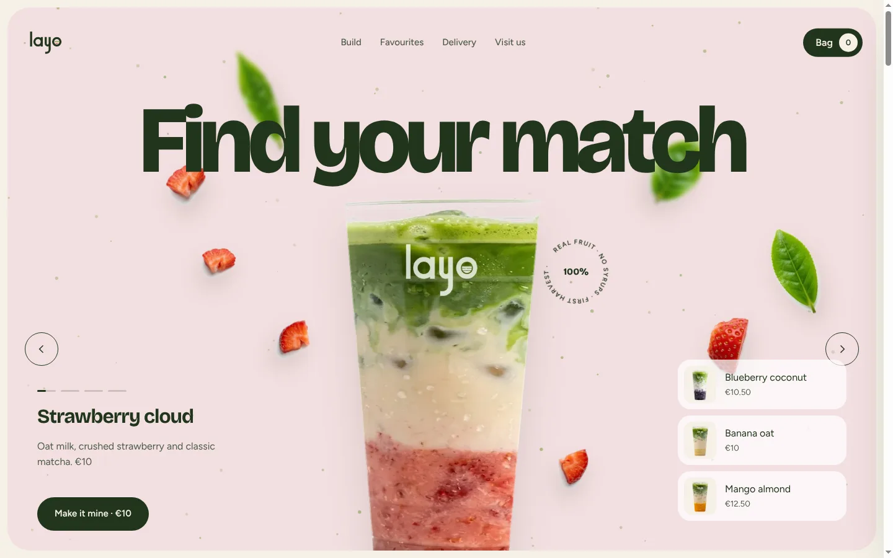
A café called simply “Matcha” sells layered drinks: milk, fruit and matcha, mixed as the customer wishes. They wanted a site for image and for home delivery through Wolt and Uber Eats, free from €20, base drink €10. One action matters: build your matcha and order it.
Matcha brands either look cold and minimal or cheap and pastel, and “Order” sends people to a plain list in a courier app.
The emotion is “I made today’s flavour”. Keep that moment on our site and use the courier only to deliver.
60% quiet luxury, 40% bold and playful. A strong first screen and builder, calm everywhere else.
“Matcha” can’t be found or protected. Mido was the first favourite, until a check showed the Swiss watch brand. “Matcha Match” became the tagline. Layo, from “layer”, passed the brand, domain and social checks.
The “o” is a glass seen from the side, filled in layers. On the site those layers take the colours of the drink you build, so the logo becomes part of the product.
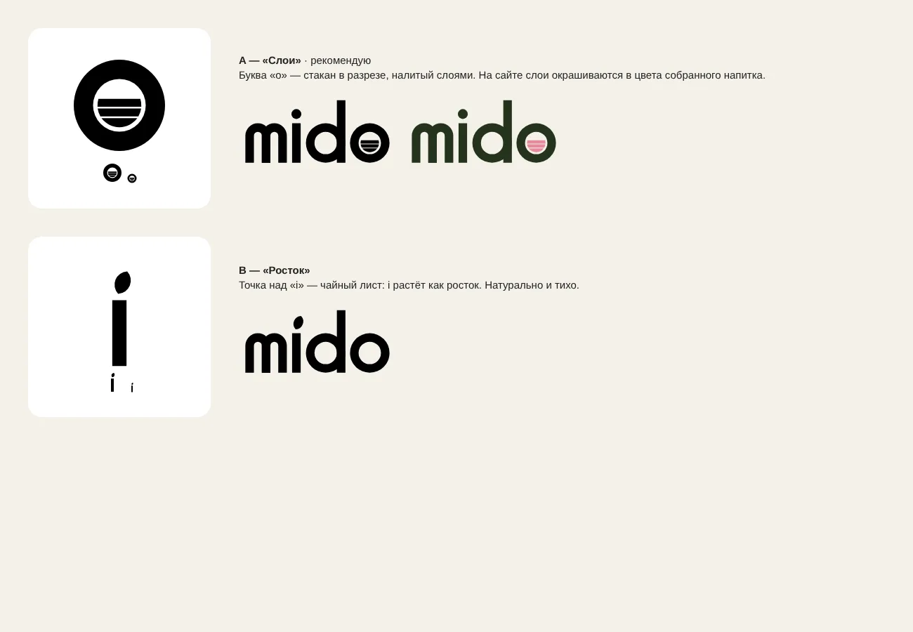
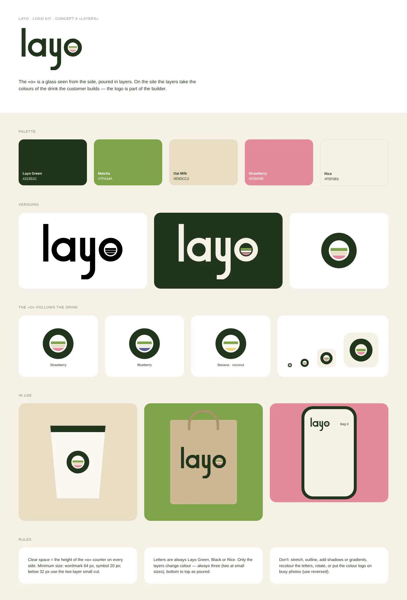
A black and white wireframe, built on proven layouts from our Figma reference kit. Three first-screen options were explored before the final one combined a flavour carousel with a calmer split card.
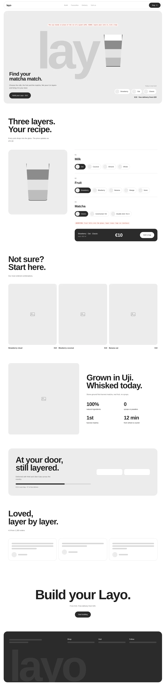
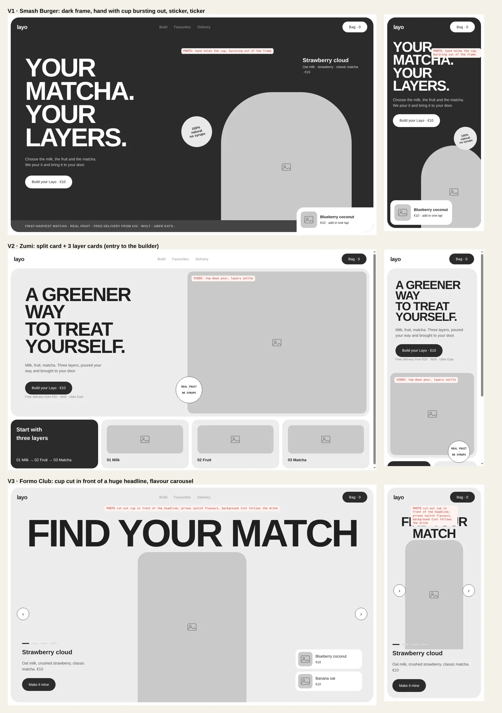
3D liquid looked like graphics, so the builder is made of real photographs: an empty cup with ice, then fruit, milk and the finished drink, revealed through soft animated masks. Real pieces of fruit drop in, milk streams down, matcha blooms into the milk in clouds.
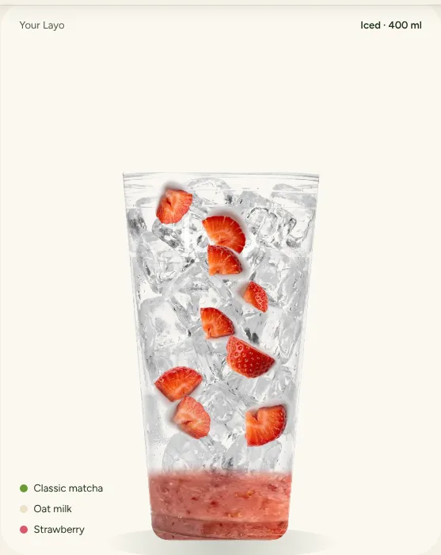
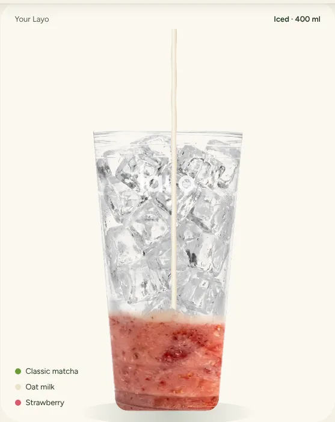
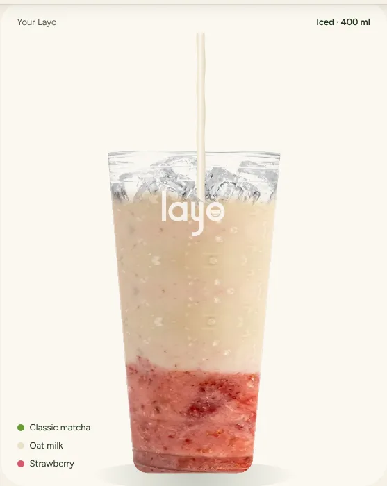
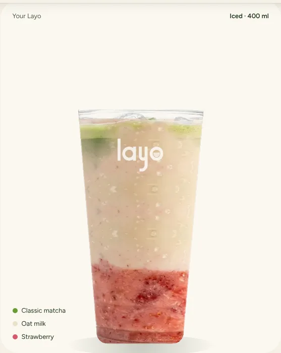
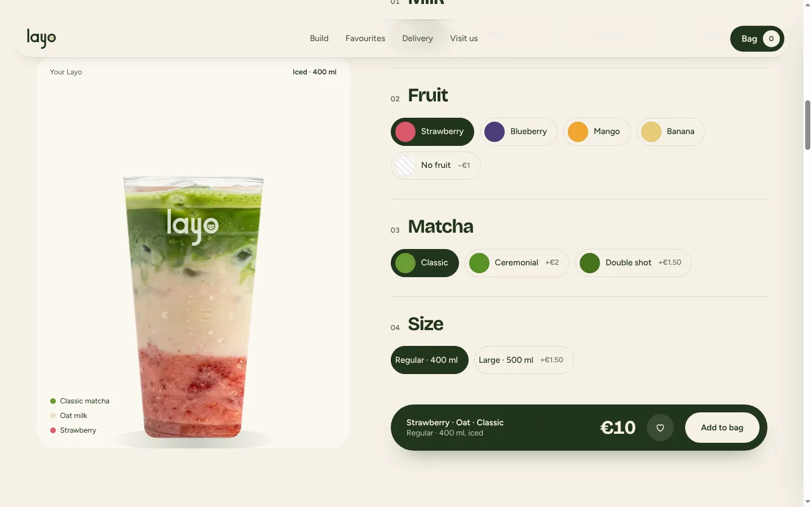
The price updates with every choice, a bar shows how much is left to free delivery, favourites can be added in one tap, and saved recipes plus “repeat last order” bring people back.
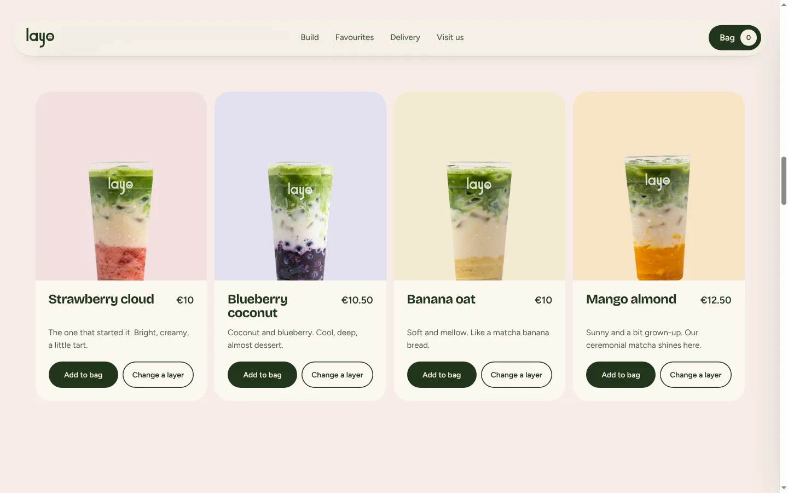
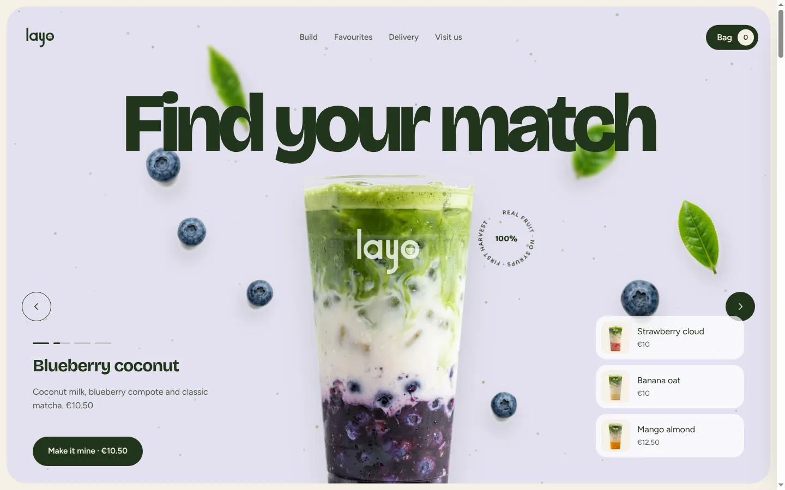
Most orders come from a phone: the cup stays in view while you build, flavours swipe, and the bag sits at the bottom of the screen.
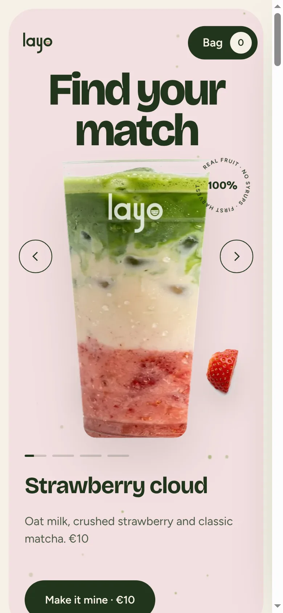